地形本身包含多个参数，其中包括地形阻碍逻辑、地形命中补正、地形机动补正、地形防御补正（钢铁之魂、时空之影），此外还有一些涉及到地形的参数，例如距离命中补正。接下�砦揖椭鹨凰得鞫杂诘匦胃鞲霾问�的运用。
1.地形阻碍逻辑：地形阻碍逻辑指的是敌我单位对于地形是否可径直穿越或者停留的逻辑判定。像冰块、宇宙漩涡之类的就是不可径直穿越或者停留的地形。
1.1敌方单位控制：利用远程武器可以无视地形阻碍逻辑的性质可以对敌方远程单位进行控制，如下图所示：
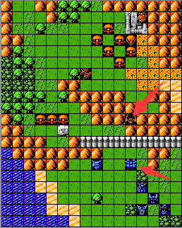
假设箭头所示的敌方单位是一个移动力较高并且是移动优先的智商的单位（此类单位移动选人的方式对我方弱势单位威胁较大），那么我们可以利用地形阻碍，用一个我方单位（可以是远程，能输出，也可以是高防单位，能抗）对其进行完美控制，在后续不会对我方单位造成任何威胁。
1.2卡位利用：对于地形阻碍利用最大的应该就是非封闭式卡位（对于卡位的介绍请参考游戏说明-攻略心得-实战理论-卡位玩法），如下图所示：
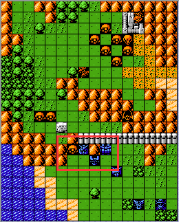
通过对阻碍地形的利用很容易形成非封闭式卡位的局势，但是要想成为一个高端玩家，不建议长期使用非封闭式卡位去达到过关的目的。
1.3蹲墙角：卡位的低级用法，新手实在打不过可以采用此方法，利用地形阻碍，敌方单位将我方单位全部包围即可起到卡位的作用，即上方的敌方单位不会移动。如下图红框所示的站位所示：
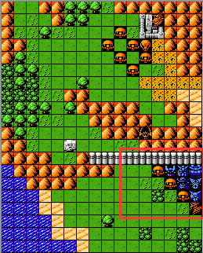
2.地形机动补正：地形机动补正对于我方陆、海型单位具有影响，也就是陆、海型单位在穿越森林、岩石、山脉时会消耗更多的机动。但是这个影响是互相的，对于敌方的陆、海型单位同样有此补正，所以我们可以借此得到一些战术上的运用。
2.1根据地形机动补正值来将敌方的优先移动转换为优先攻击：对于优先移动的敌方单位，我们可以利用地形机动补正用我方合适的单位来限制其移动，使其在移动范围内无我方其他可攻击目标单位而作出优先攻击的选择，如下图所示：
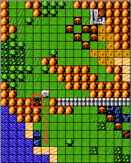
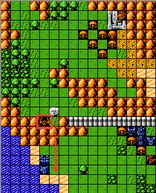
假设方框所示的敌方单位射程是4，机动力为6，机体类型为陆。对于左图而言，该敌方单位因为是优先移动的判定，必然会攻击我方较为弱势的爱美神A（加血机）；对于右图而言，由于存在地形机动补正的影响，该敌方单位穿越山脉会消耗更多的机动值而无法攻击到爱美神A,此时会优先选择攻击白色基地（母舰），这就是对于地形机动补正的利用。
2.2利用地形机动补正进行防守反击：此打法一般是针对高移动的敌方近战单位而言的，利用地形对于机动的补正使得我方在一开始处于一个合适的输出位置，如下图所示：
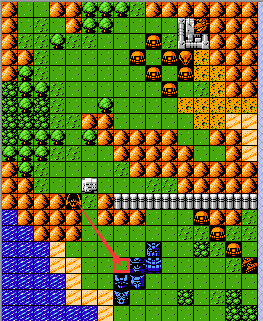
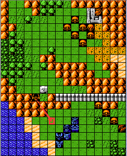
假设箭头末端的敌方单位机动为7，对于左图而言，我方的布局会让其攻击到红色方框周围的我方单位，对我方造成一定程度的伤害；对于右图而言，由于地形机动补正的影响，此敌方单位仅仅可以移动到红色方框所示的位置而无法对我方单位造成伤害，在下一回合我方可远程输出而避免对自己的伤害。
2.3地形机动补正对于敌方单位走向的结果：敌方单位在可移动攻击范围内无可攻击的我方单位时会选择移动，移动方向取决于此敌方距离我方的最近的单位，也就是说该敌方单位的移动方向是朝着距离我方最近的单位移动的，如下图所示：
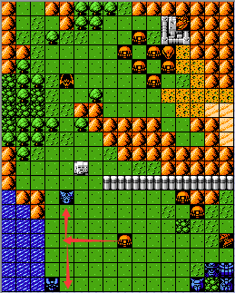
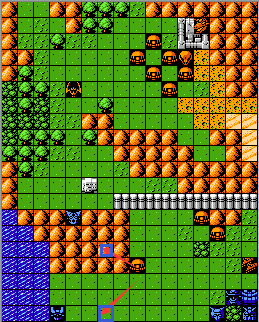
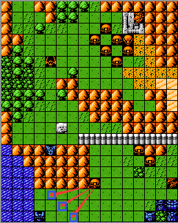
假设扎古的移动力为5，在可移动攻击范围内无我方可攻击的单位，那么对于图一而言此时会选择朝距离我方最近的单位移动，也就是扎古会朝着盖塔1移动，这仅仅取决于位置关系，和其他任何机体参数无关。对于图二而言，由于地形机动补正的影响，扎古朝盖塔1移动会消耗更多的机动而使得移动结果停留在离盖塔1较远的位置，而扎古朝魔神Z移动会停留在离魔神Z较近的位置，此时扎古会选择向魔神Z移动，移动的原则是会朝着移动之后距离我方单位最近的结果的方向进行移动（计算地形机动补正之后距离我方单位最近【对于上述情况而言移向盖塔1需要12机动，移向魔神Z需要7机动】），也就是扎古朝盖塔1移动，会停留在上方蓝框处，朝魔神Z会停留在下方蓝框处，那么扎古选择向魔神Z移动，停留在下方蓝框处，当然这个停留位置是随机的（这个随机指的就是敌方走位【敌方在朝距离我方最近的单位移动的时候一般会出现多个结果，对于图三而言，扎古会停留在三个蓝色方框的其中一处】），随机性取决于最短路径数的所有解的数量，上述情况就是有三个解，每个位置在理论上是1/3的停留机会。
3.地形命中补正：地形命中补正是对进攻方而言的，会受到命中补正的影响而减少命中，在一般情况下作用不大，因为有SL的影响整个因素可以忽略不计，但是我们在某些时候应该还是要对其应用，让结果导向有利于我方的一方，减少不必要的麻烦（在多对一的情况下，命中补正的影响效果还是显著的），如下图所示：
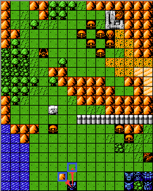
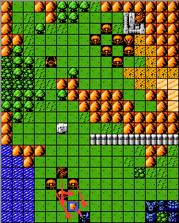
对于左图而言，在面临敌方单位的进攻时，魔神Z需要提前出击打反击来提前输出，这个时候有两个选择结果，就是蓝框所示的两个位置【当然也可以是其他位置，在这里我只是简单对比说明】由于魔神Z为陆型单位，进入山脉地形会使得扎古受到地形命中补正的影响而减少命中，客观上来说忽略其他因素的影响对我方来说是有利的，但是实际情况中往往我方的走位才是关键的，因此可以忽略此地形补正的影响而去选择对于战场布局有利的位置；对于右图而言，魔神Z需要反击四个敌方单位，选择山脉地形，那么此时的地形命中效果就极大得显现了出来，可以在一定程度上减少被命中的概率从而减免伤害，或者说可以减少SL的时间来使得魔神Z承受更少的伤害。
4.距离命中补正：距离命中补正仅对部分远程武器有效，在原版中距离命中补正对于浮游炮类武器是无效的（α・瓦索龙、艾尔美斯、乍得・多加等机体的远程武器）。距离命中补正的数值取决于攻击射程，也就是攻击射程越远，补正数值越多【具体可参考游戏说明-参数说明-显参-武器-距离命中补正表格】。通过对距离命中补正和地形命中补正的综合运用，可以大大减少敌方的命中从而让结果对我方更有利。
5.地形防御补正：地形防御补正只在钢铁之魂和时空之影中出现，是新增的一个地形参数，补正数值等同于地形命中补正，也就是说如果地形命中补正减少的命中率为10%，那么地形防御补正减免的伤害也为10%。地形防御补正相对于地形命中补正而言，其影响因素是相当大的，在上述两个版本中会有较大的运用。
5.1.伤害减免：伤害减免很好理解，就是对于陆、海型单位而言占据具有地形防御补正的地形，在受到敌方攻击之后，受到的伤害会按照百分比减免。例如在平原上不具有地形防御补正的效果，我方承受的伤害为100，那么在具有地形防御补正效果的地形上，假设补正数值为10%，那么受到的伤害将减少为90。利用此原则，我们可以通过机体的走位来减少受到来自敌方攻击的伤害，如下图所示：
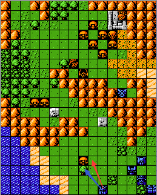
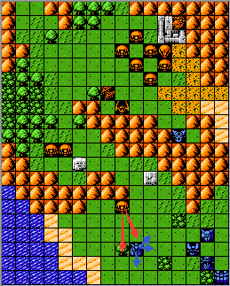
高达在攻击扎古时，现在有两个进攻位置可以选择，明显的蓝色箭头所指位置地形具有防御补正效果，而红色箭头所指位置没有地形防御补正效果，那么我们可以选择蓝色箭头所指位置进行进攻，减少高达所受到的伤害，这是对于我方单位伤害减免的运用；对于右图而言，我方即将受到来自扎古的攻击，如果选择停留的位置进行反击，那么扎古必然会选择左方具有地形防御补正的位置进行攻击，那么我们可以移动高达至蓝色箭头所示位置来避免敌方单位占据具有防御补正的地形从而提高输出伤害。
5.2.仇恨转移：对于AI智商基础判定方式中的次优先级判定，即优先攻击使自己输出高的单位或者使自己承受伤害低的单位，对于前者而言，地形防御补正的因素会影响这个结果，我以下图举例说明：
假设不计算地形防御补正的影响，高达受到扎古的攻击，所受的伤害为100，盖塔1所受的伤害为90，那么扎古必然会选择攻击高达。现在让高达移动到旁边树林的位置，假设地形防御补正的数值是15%，那么受到的伤害将减少为85，那么扎古则会攻击盖塔1，这就利用地形防御补正起到了仇恨转移的作用。
5.3.控位：利用敌方单位对于地形防御补正参数的计算来控制其走位。如下图所示：
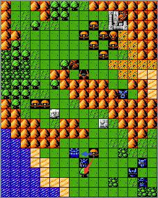
假设扎古的目标攻击单位为高达，那么不考虑地形防御补正扎古会按照上下左右的攻击位置（关于攻击顺序请参考游戏说明-游戏简介-隐参-攻击顺序）去选择“上”位（蓝色箭头所示位置）攻击高达，此时会贴身于母舰，母舰在下回合只能进行近战输出；如果存在地形防御补正，扎古会选择红色箭头所示位置攻击高达，我方母舰就可以在下回合无损伤对扎古进行输出，这个就是利用地形防御补正对敌方单位进行控位，当然前提是要满足多个条件（此状况只有在扎古AI中的基础判定方式中的次优先级判定以使自己承受伤害最低为优先级的情况下才适用，而且要同时满足母舰近战输出高于高达），而且要根据对于玩家自己需要的结果方向进行综合决策，因为扎古移动至红色箭头所指位置必然会降低我方对其的伤害。